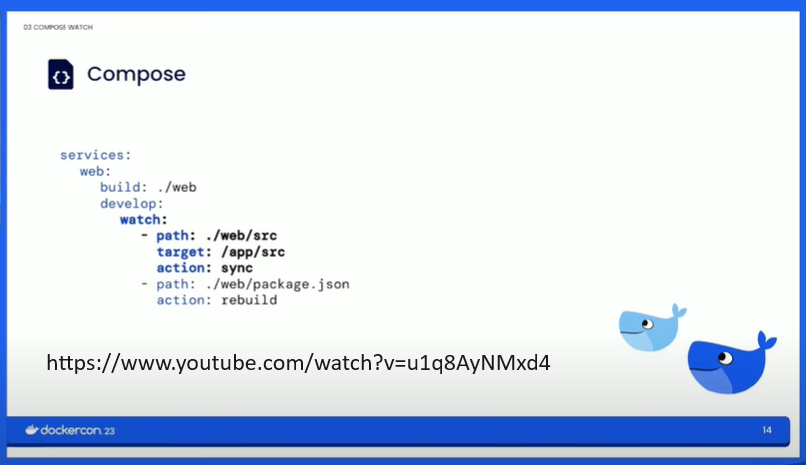

Advanced Docker¶
This is a selection of less shown aspects of Docker, not necessarily advanced Docker but more uncommon.
'version' deprecated¶
A docker-compose.yaml file no longer needs the VERSION at top.
One can also use a different named file with the -f flag: docker compose -f another_file.yaml up and we can avoid the use of docker-compose in favor of docker compose.
We can use compose.yml in place of docker-compose.yml
Depends On¶
https://www.warp.dev/terminus/docker-compose-depends-on
Whilst depends on defines a dependency, to check that the service is running we can use:
services:
api:
build: .
depends_on:
database:
condition: service_healthy
database:
image: postgres
healthcheck:
test: ["CMD-SHELL", "pg_isready"]
services:
api:
build: .
depends_on:
database:
condition: service_healthy
migration:
condition: service_completed_successfully
database:
image: postgres
healthcheck:
test: ["CMD-SHELL", "pg_isready"]
A good short video on this is https://www.youtube.com/watch?v=BTXfR76WmCw.
Develop and watch¶
There is an alternative way for reloading without rebuilding that does not need bind mounts:

DockerCon2023 Video on Compose Develop
Docs: https://docs.docker.com/compose/file-watch/
services:
web:
build: .
command: npm start
develop:
watch:
- action: sync
path: ./web
target: /src/web
ignore:
- node_modules/
- action: rebuild
path: package.json
We can set either rebuild if the image needs rebuilding when we change requirements.txt for example and we can use sync when our code changes.
sync+restart is ideal when config file changes, and you don't need to rebuild the image but just restart the main process of the service containers. It will work well when you update a database configuration or your nginx.conf file for example
Labels¶
Labels are useful to add metadata:
FROM ubuntu:latest
LABEL "website.name"="example.com"
LABEL maintainer="me"
LABEL website="geeksforgeeks"
LABEL desc="This is docker tutorial"
Overide, include and merge¶
Files can be overriden, merge or have include files.
https://docs.docker.com/compose/multiple-compose-files/extends/#extending-services-from-another-file]
For example:
docker compose -f compose.yml -f compose.admin.yml run backup_db
The compose.yml file might specify a webapp service.
webapp:
image: examples/web
ports:
- "9000:8000"
volumes:
- "/data"
environment:
- DEBUG=1
- ANOTHER_VARIABLE=value
This is efectively, like updating a dictonary where we just pass in fields to be add/updated and copy in the remaining fields.
It is also worth noting that if we have two docker composes files such as docker-compose.yml and docker-compose-override.yml then running docker compose up will run docker-compose.yml and then automatically run docker-compose-override.yml.
https://docs.docker.com/compose/multiple-compose-files/merge/ or
Merge Compose files
Docker Compose lets you merge and override a set of Compose files together to create a composite Compose file.
By default, Compose reads two files, a compose.yml and an optional compose.override.yml file. By convention, the compose.yml contains your base configuration. The override file can contain configuration overrides for existing services or entirely new services.
If a service is defined in both files, Compose merges the configurations using the rules described below and in the Compose Specification.
Multi stage builds¶
Many times, one part of the build creates artificacts that are used in the main image.
By using multi stage builds, the artifiact and not the images needed to create them are used in the main image build.
For example, we might build an artifact in Cpython to use in our image build. We don't want the Cpython compiler image included in the final image, just the code.
FastAPI Docker To Go has an example of a multi stage build where we create a simple artifact of test.txt with the current date and time and copy this into the final image.
Securing secrets¶
The video below is a very good explainer of how 'secrets' can be exposed and how to prevent this.
Under the hood¶
Under the hood, Docker uses Linux features such as Cgroups, Namespaces and Overlay File System, to create the illusion that a Docker container is its only world.
There are two very good YT talks on this:
- https://www.youtube.com/watch?v=_TsSmSu57Zo
- https://www.youtube.com/watch?v=JOsWB50LmwQ
- For a course to learn about Linux Containerisation to see what Docker does under the hood: Docker under the hood